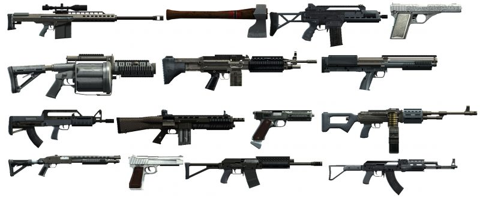

Armamento
Foram adicionadas dezenas de armas novas para todos os tipos e para todos os gostos que podem ser compradas na loja de armas "Ammu-Nation" como era em GTA San Andreas. Tanques de guerra e caças militares também retornaram ao GTA V e podem ser disparados contra qualquer coisa que o jogador quiser. Com o passar do tempo a Rockstar adiciona várias armas novas por meio de atualizações gratuitas e que também podem ser compradas nas lojas de armas em todo o sul do estado.

- Coletes balísticos foram mantidos no jogo, agora podem ser comprados em diversos tipos de materiais diferentes que afetarão sua durabilidade, eles também podem ser achados escondidos pelo mapa, assim como as armas de fogo e explosivos.
- Pela primeira vez na série é possível modificar a arma já comprada, adicionando lanternas novas, silenciadores, empunhaduras, miras mais precisas, lembrando que isso afetará positivamente ou negativamente o desempenho da arma, alterar suas cores é também possível agora para deixar sua arma mais única, assim como acontece em Call of Duty e em Batllefield.
- Pela primeira vez na saga GTA as armas que o jogador estiver portando poderão ser escolhidas em uma interface gráfica, chamada de "Roda de armas", é aqui aonde é possível escolher as armas que estão separadas devidamente por categoria, para que possa entender melhor uma imagem está disponível ao lado para que possa ser observada.